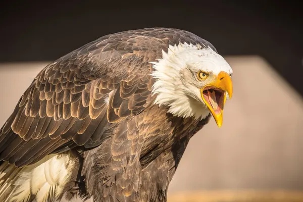

Águila
Se tratan de aves de presa del orden de Accipitriformes.
Se caracterizan por su gran tamaño, constitución robusta y pico pesado.
Podemos encontrarla prácticamente en cualquier región del mundo, siempre y cuando el lugar donde vivan no sea demasiado frío ni tampoco tenga temperaturas extremas. A pesar de esta amplia distribución, se ha registrado gracias a innumerables estudios que mayor proporción de águilas en el hemisferio norte que en el sur.

Como todas las aves de presa, las águilas poseen un pico grande, poderoso y puntiagudo para desprender la carne de su presa. Cuentan también con tarsos y garras poderosas. Llama también la atención la fuerza de las águilas, que les posibilita alzar en vuelo a presas mucho más pesadas que ellas.
Las características principales de esta gran ave radican sobre todo en el cuerpo estilizado y aerodinámico que tienen. Las águilas, a diferencia de muchas otras aves, tienen un cuerpo quizás algo más delgado con unas amplias alas y una cabeza pequeña pero con grandes ojos. Se dice que un águila puede ver, mientras está volando, a su objetivo que se encuentra a varios kilómetros de distancia, siguiéndolo sigilosamente desde las alturas para darle caza.
El plumaje por lo general es de un color marrón parduzco, como en el caso del águila real, sin embargo puede variar mucho según el tipo de águila que vayas a observar, pudiendo ser algunas de un color grisáceo como el águila harpía.
Existen muchas especies de águilas que se encuentran en peligro de extinción siendo la causa principal la acción del hombre. El águila, a pesar de ser uno de los únicos depredadores del territorio en el que se encuentra, estando sobre la cadena alimenticia, encuentra muchos problemas ya que poco a poco se están talando y desforestando las zonas en las que suele vivir.
Las águilas han sido utilizadas por muchos pueblos como símbolo nacional y especialmente símbolo imperial, mostrando tanto poderío como belleza. Del Imperio romano es que, en general, otros estados han tomado la forma más usual del emblema con un águila; el Imperio bizantino aportó el símbolo del águila bicéfala.
El águila era sinónimo de poder para muchos pueblos antiguos como los Mochica del antiguo Perú, mayas y aztecas.También es emblema de ciertos equipos deportivos, principalmente en béisbol o fútbol.
Páginas sugeridas:
Azor
Buitre
Gavilán